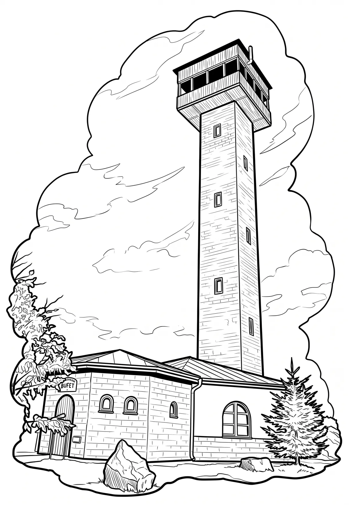

Rozhledna Karasín
Vysočina kraj · 704 m n. m.

technická památka · #061
Rozhledna Karasín se nachází východně od vesnice Karasín – části města Bystřice nad Pernštejnem, v nadmořské výšce 704 m n. m. na úbočí vrchu Přední skála, kóta 712,3 m n. m., který geomorfologicky náleží Hornosvratecké vrchovině.